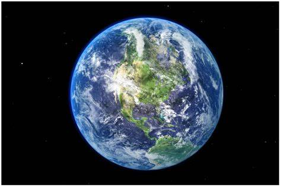
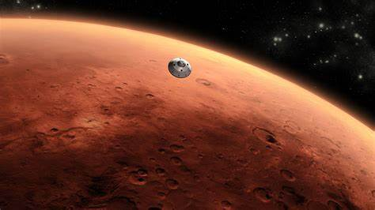

PLANETS
A planet is a sizable, rounded astronomical object that typically orbits a star, a stellar remnant, or a brown dwarf, but is not one itself. The Solar System includes eight planets under the strictest definition: the terrestrial planets—Mercury, Venus, Earth, and Mars—and the giant planets—Jupiter, Saturn, Uranus, and Neptune. The leading theory on how planets form is the nebular hypothesis, which suggests that a collapsing interstellar cloud, originating from a nebula, forms a young protostar surrounded by a protoplanetary disk.
MERCURY
Mercury is the closest planet to the Sun and the smallest in the Solar System. Its English name comes from Mercurius, the Roman god of commerce, communication, and the gods' messenger. Mercury is a terrestrial planet, with surface gravity similar to that of Mars. Its surface is heavily cratered due to countless impact events over billions of years. The largest of these craters, Caloris Planitia, spans 1,550 km (960 mi) in diameter, approximately one-third the diameter of Mercury itself, which is 4,880 km (3,030 mi).

EARTH
Earth, the third planet from the Sun, is the only known astronomical object that supports life. This is made possible by Earth's unique status as an ocean world, the only one in the Solar System with liquid surface water. Earth's global ocean, which covers 70.8% of its crust, contains nearly all of its water. The remaining 29.2% of the crust consists of land, primarily in the form of continental masses within Earth's land hemisphere. Much of Earth's land is moderately humid and covered with vegetation, while vast ice sheets in the polar deserts hold more water than all of Earth's groundwater, lakes, rivers, and atmospheric moisture combined.
MARS
Mars is the fourth planet from the Sun and is characterized by its orange-red appearance, which is due to a layer of iron(III) oxide dust, earning it the title "the Red Planet."It is one of the brightest objects visible in Earth's night sky, and its distinct albedo features make it a popular target for telescopic observations. Classified as a terrestrial planet, Mars is the second smallest planet in the Solar System, with a diameter of 6,779 kilometers (4,212 miles). A day on Mars, known as a sol, lasts about 24.5 hours, and a Martian year spans approximately 1.88 Earth years, or 687 Earth days. Mars has two natural moons, Phobos and Deimos, both of which are small and irregularly shaped.
